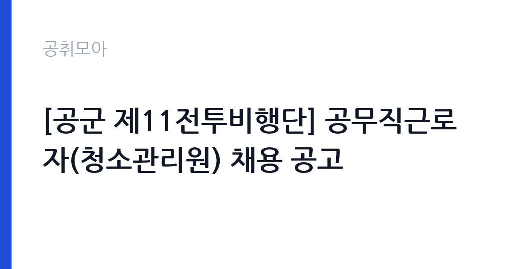

[국가기관] [공군 제11전투비행단] 공무직근로자(청소관리원) 채용 공고
국방부 국군조직 공군 공군제11전투비행단 · 대구 · 마감 2026-10-29 (D-14) · 출처 나라일터

한눈에 보는 모집 조건
| 기관 | 국방부 국군조직 공군 공군제11전투비행단 |
|---|---|
| 공고명 | [공군 제11전투비행단] 공무직근로자(청소관리원) 채용 공고 |
| 고용형태 | 공무직 |
| 근무지 | 대구 |
| 게시일 | 2026-10-16 |
| 마감일 | 2026-10-29 (D-14) |
지원자격, 이렇게 읽으세요
- 공무직(청소관리원) 2명
- 접수 ~2026-10-29 마감
- 세부 조건은 원문 공고문 확인
청소관리원은 별도 자격증이 필수가 아닌 경우가 많아 진입 문턱이 낮은 편입니다. 다만 군부대 근무라 보안 요건과 신원조회에 결격이 없어야 하며 성실한 근무 태도를 서류와 면접에서 보여주는 것이 중요합니다. 청소와 시설 위생 관련 경력이 있으면 우대받을 수 있으니 경력증명서를 미리 발급받아 두시기 바랍니다. 세부 응시자격은 원문 공고에서 확인하시고 문의는 11전투비행단 인사행정처 053-989-3035로 하시면 됩니다.
이 공고의 포인트
이 공고의 매력은 모집인원이 2명이라 같은 부대 시설관리원 1명 모집보다 기회가 넓다는 점입니다. 공무직이라 정년까지 안정적으로 근무할 수 있고 군부대 특성상 근무 구역과 시간대가 규칙적입니다. 청소 업무는 체력 부담이 있으나 교대와 휴게가 정해진 조직 근무라 민간 용역보다 처우가 안정적인 편입니다. 채용예정일이 1월과 2월로 나뉘어 있어 본인 일정에 맞는 시기를 염두에 두고 지원하시기 바랍니다.
전형은 어떻게 진행되나
원서접수는 10월 27일부터 10월 29일까지 사흘간이며 서류전형 후 면접시험 순으로 진행됩니다. 채용예정일은 2027년 1월 1일과 2월 1일로 2명에 대해 시기가 다르니 원문에서 본인이 해당하는 일정을 확인하시기 바랍니다. 접수 창구가 짧으므로 첫날 제출을 목표로 준비하시고 제출서류와 접수처는 원문 공고에서 확인하시기 바랍니다.
원문에서 확인한 전형 방식
[공군 제11전투비행단] 공무직근로자(청소관리원) 채용 공고 ○ 채용분야: 청소관리원 2명 ○ 원서접수 기한: 2026년 10월 27일(화) ~ 2026년 10월 29일(목) ○ 선발방법: 서류전형 - 면접시험 ○ 채용예정일: 2027년 1월 1일 / 2027년 2월 1일 ○ 문의처: 공군 제11전투비행단 인사행정처(053-989-3035)
이런 분께 추천해요
- 청소와 미화, 시설 위생 관련 경력이 있는 분께 적합합니다.
- 대구 거주로 부대 통근이 가능하고 안정적인 근무를 원하는 분께 권합니다.
- 정년 보장 공무직으로 장기 근무를 계획하는 분께 잘 맞습니다.
지원 전 체크리스트
- 원문 공고의 응시자격과 제출서류를 모두 확인했습니다.
- 경력증명서 등 증빙서류를 접수 전에 발급받았습니다.
- 채용예정일 1월과 2월 중 본인 가능 시기를 확인했습니다.
- 접수 첫날 제출을 목표로 마감 전에 서류를 완성했습니다.
모집 일정과 제출 타이밍
공고 등록일은 10월 16일이며 원서접수는 10월 27일부터 10월 29일까지입니다. 서류와 면접을 거쳐 2027년 1월 1일과 2월 1일에 각각 채용될 예정입니다. 접수 기간이 사흘뿐이라 10월 24일과 25일 주말을 서류 준비에 활용하시면 여유 있습니다. 면접 일정 등 세부 사항은 원문 공고와 인사행정처 안내를 따르시기 바랍니다.
직무 이해하기: 국가기관
청소관리원은 부대 내 지정 구역의 청소와 위생 관리를 맡습니다. 사무실과 복도, 화장실의 일일 청소와 쓰레기 분리수거가 기본이며 계절별 대청소와 제설 지원 같은 부대 공통 작업에 참여할 수 있습니다. 군부대는 보안구역 출입 절차가 정해져 있어 작업 동선과 시간을 사전에 조율해야 하며 외부인 출입이 잦은 민원 구역은 응대 예절도 필요합니다. 세제와 청소장비의 안전 사용 수칙을 지키는 것이 기본 역량으로 평가됩니다.
자기소개서 작성 팁
청소관리 자기소개서에서는 성실성과 꼼꼼함을 보여주는 경험이 핵심입니다. 정해진 구역을 책임지고 관리했던 경험이나 위생 점검에서 좋은 평가를 받았던 사례를 구체적으로 쓰시기 바랍니다. 군부대 지원 동기에는 보안 규정 준수와 규율 이행 의지를 언급하시면 좋습니다. 체력을 요하는 업무이므로 건강 관리와 꾸준한 근태를 어필할 수 있는 내용을 넣어주시기 바랍니다.
면접 준비 포인트
면접에서는 근무 태도와 관련된 질문이 중심이 됩니다. 궂은일을 마다하지 않고 꾸준히 해온 경험을 사례로 준비하시면 좋습니다. 보안구역 근무에 대한 이해를 묻는다면 출입 절차 준수와 비밀 유지 의지를 밝히시기 바랍니다. 조기 출근과 휴일 근무 가능 여부에는 가정 일정까지 고려한 현실적인 답변을 하시는 것이 좋습니다.
급여·근무조건 읽는 법
이번 공고 본문에는 보수 금액이 공개되어 있지 않아 정확한 급여는 원문 공고문에서 확인하셔야 합니다. 참고로 유사 국가기관 공무직 임금표인 산림청 2026년 공무직근로자 임금표에서는 1호봉 월임금액이 2,157,000원 수준으로 고시되어 있습니다. 출처는 산림청 누리집 게시 자료이며 국방부 소속 부대의 실제 임금표와는 다를 수 있으니 원문 확인이 필수입니다. 일반적으로 기본급에 명절휴가비 등이 더해지며 실수령액은 4대 보험과 세금 공제 후 금액이 됩니다. 경쟁률과 합격선은 공개되지 않았습니다.
자주 묻는 질문
- 청소 경력이 없어도 지원할 수 있나요?
청소관리원은 필수 자격증이 없는 경우가 많아 경력이 없어도 지원할 수 있습니다. 다만 관련 경력이 있으면 서류에서 유리하니 세부 자격은 원문 공고의 응시자격 항목에서 확인하시기 바랍니다. - 채용 시기가 2개로 나뉜 이유는 무엇인가요?
2명을 2027년 1월 1일과 2월 1일에 나눠 채용할 예정입니다. 결원 발생 시기에 맞춘 것으로 보이며 본인이 해당하는 일정은 원문 공고에서 확인하시기 바랍니다. - 근무지는 어디인가요?
근무지역은 대구광역시이며 공군 제11전투비행단 부대 내에서 근무합니다. 부대 출입 절차와 통근 방법은 합격 후 안내받게 되며 사전 문의는 인사행정처에서 받습니다.
함께 보면 좋은 공고
[국가기관] 국립한글박물관 공무직근로자(시설주임(전기)) 채용 공고 — 마감 2026-10-26[국가기관] 과학기술정보통신부 기간제 근로자(비서 및 행정지원) 채용 공고 — 마감 2026-10-26[국가기관] [공군 제11전투비행단] 공무직근로자(시설관리원) 채용 공고 — 마감 2026-10-29출처: 나라일터 공개정보를 바탕으로 공취모아가 정리한 안내글입니다. 모집 조건·일정은 변경될 수 있으니 지원 전 반드시 원문 공고문을 확인하세요. 본 글은 정보 제공용이며 합격을 보장하지 않습니다.